WAVE BEYOND THE SPATIAL FRAME / SLASH ACROSS THE SONIC LANE
01 // CORE ATTRACTION
核心特色
從軟體到硬體，顛覆你的過往體驗，帶來全新的遊戲感受。
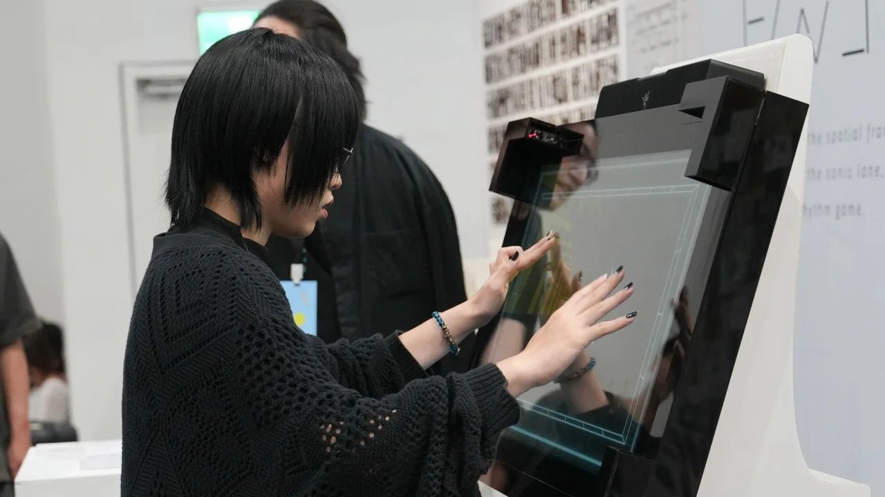
FEATURE // 01
超越螢幕的遊玩體驗
結合螢幕內多點觸控與螢幕外紅外線偵測器。使玩家嘗試超越以往認知，將遊玩體驗延伸至螢幕之外，創造與音遊全新的互動模式。
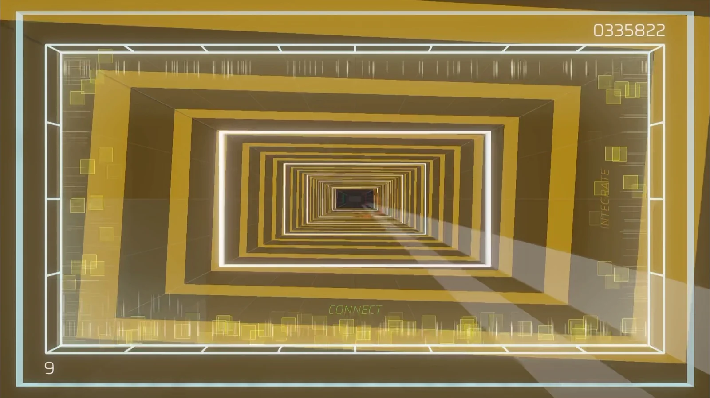
FEATURE // 02
360° 空間完整沈浸感
音符從畫面由360°分為24軌道配合音樂製作獨立譜面，帶來截然不同的視覺化體驗。
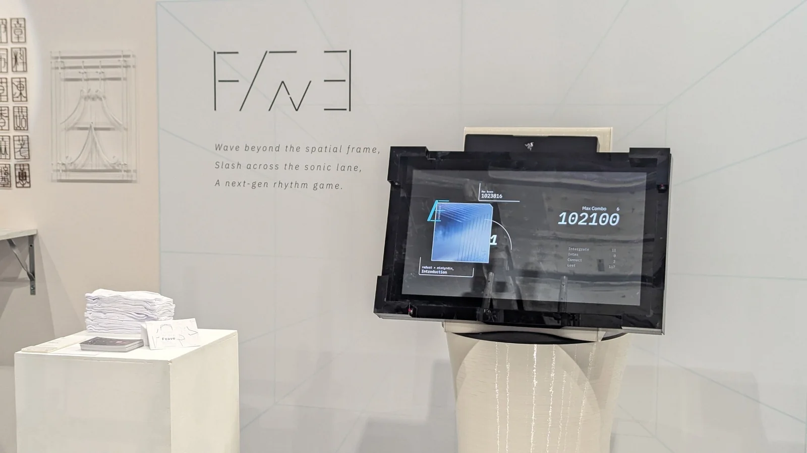
FEATURE // 03
專為遊戲設計打造的概念機體
配備 32 吋 2K 60Hz 觸控面板，並配置 4 組對射式紅外線感測陣列，對應遊戲的觸控操作及超越螢幕框架的遊玩體驗。
02 // SPATIAL MECHANICS
音符與打擊介紹
NOTE // 01
觸控點擊
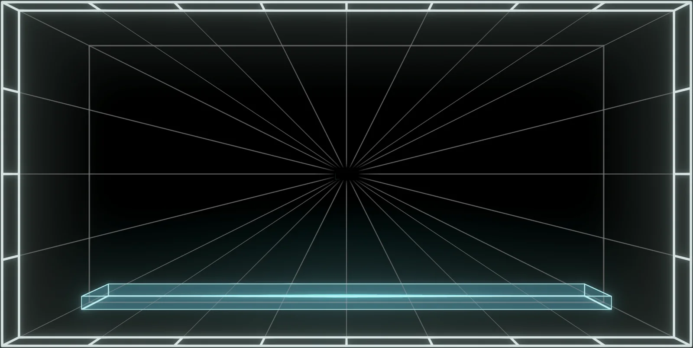
TAP
基礎點擊音符，伴隨金色雙壓提示效果。在指尖輕觸的節奏律動之外，似乎還隱藏著更多進階操作的可能性……？
NOTE // 02
觸控長壓
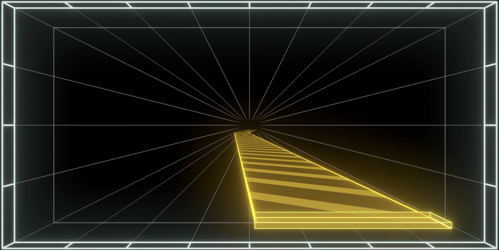
HOLD
貫穿全曲的黃色長條音符。跟隨金黃光芒的流動與指引，沉浸在綿延不絕的旋律之中。
NOTE // 03
任意觸控
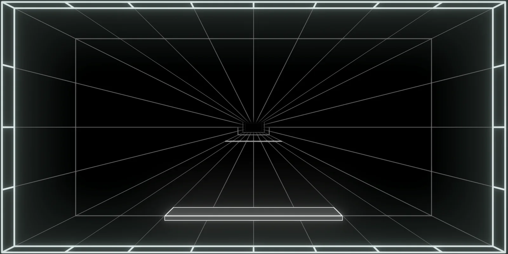
TOUCH
自由不受限的白色音符。只要觸碰到判定線，能以任何手勢自由滑動互動，將音符連綴成專屬於你的軌跡！
NOTE // 04
大範圍觸控
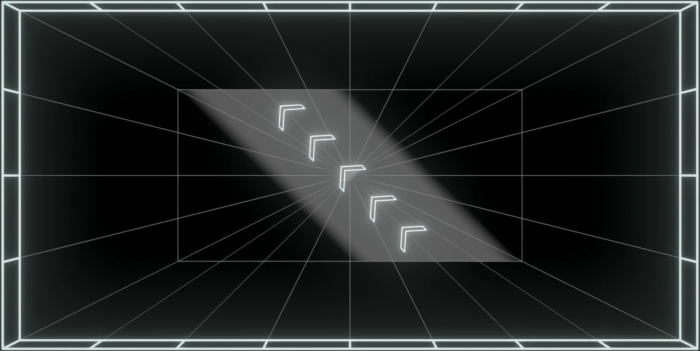
FRAME
FULL SCREEN半透明的大範圍斬擊音符，伴隨指引箭頭貫穿全螢幕。順著導引方向俐落劃過畫面，以極具張力的揮擊體感斬開一瞬的空間！
NOTE // 05
紅外線感測
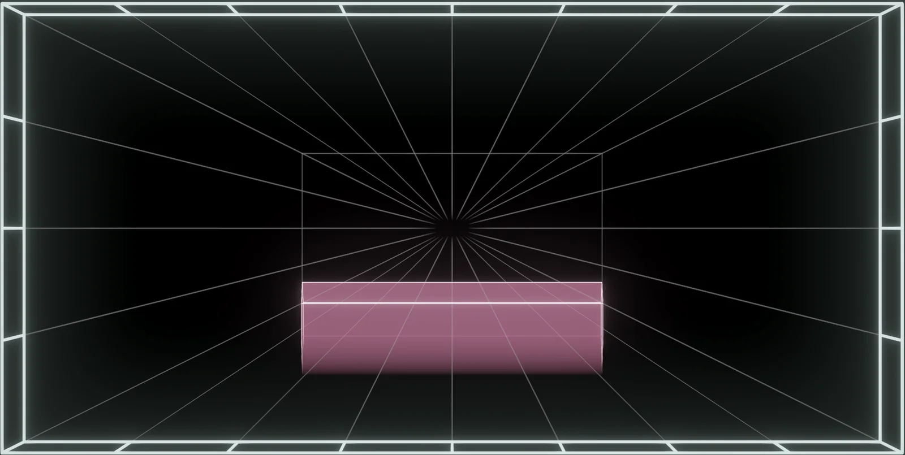
WAVE
SIGNATURE突破軌道的粉色音符，由螢幕四周的紅外線感測陣列判定。只要在感測空間內輕揮躍動即可觸發，大膽跨出螢幕邊界，揮舞心中的節奏！


03 // FEATURED TRACKLIST
收錄曲目
04 // PHYSICAL EXPERIENCE & PROVEN TRACTION
概念機研發與展出實績
打造原型概念機，於2026新一代設計展「變動邊界」公開展出並由現場玩家實機試玩體驗：
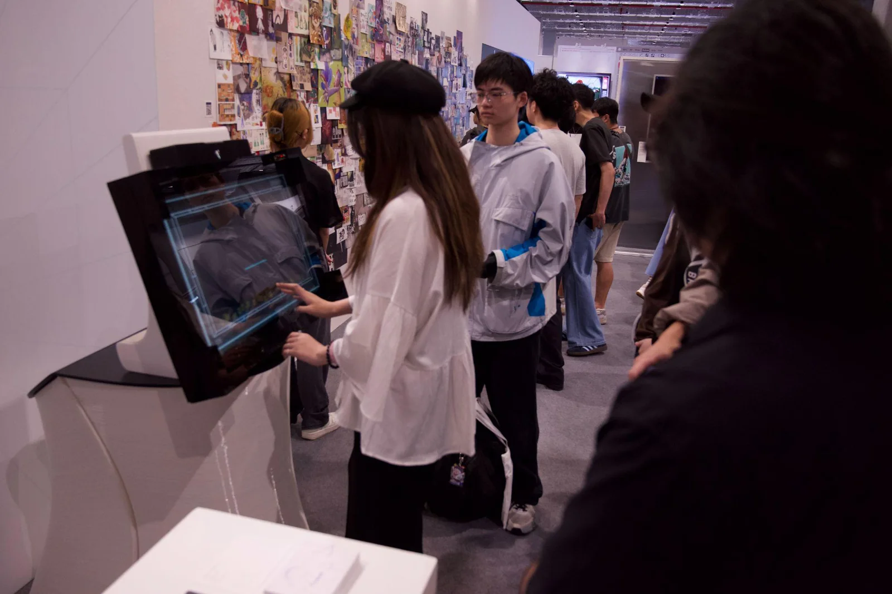
新一代設計展現場試玩排隊人潮與圍觀盛況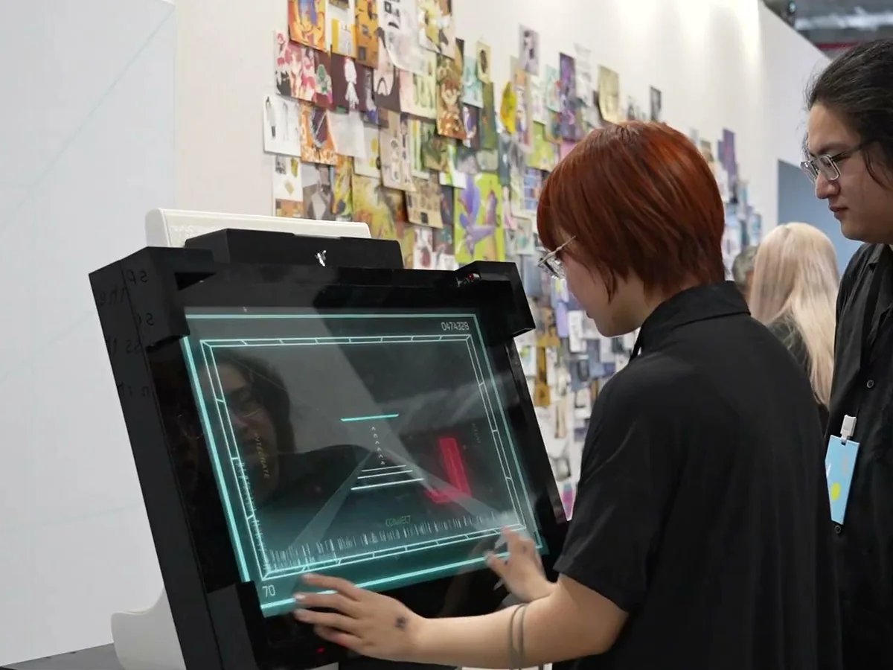
現場實機試玩體驗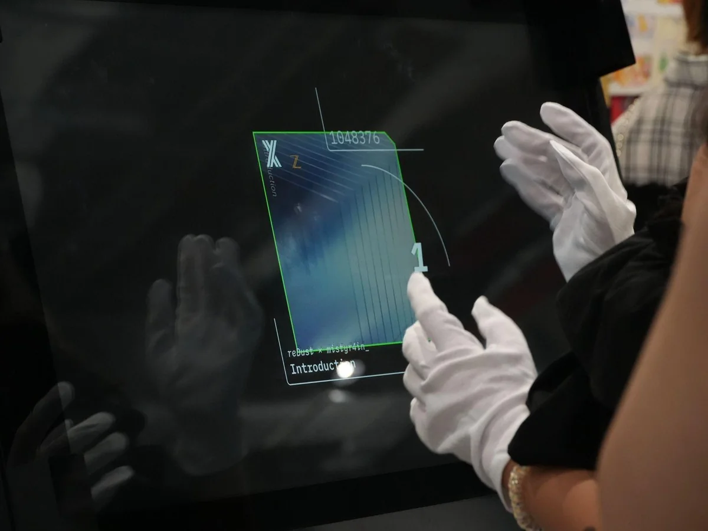
選曲畫面與單曲成績紀錄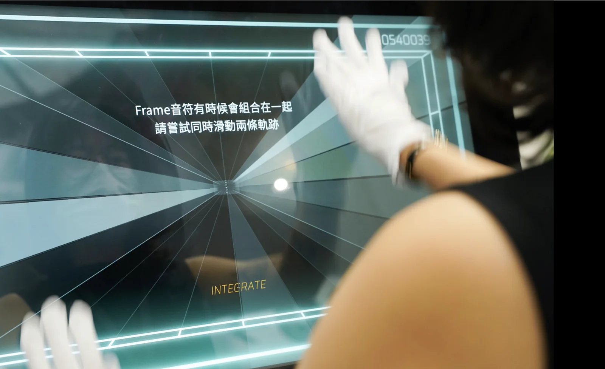
新手教學遊玩嘗試
05 // SYSTEM & AUTHORING TOOLCHAIN
自研製譜與預覽生態
配備獨立工具鏈，具備後續內容持續產出能力：
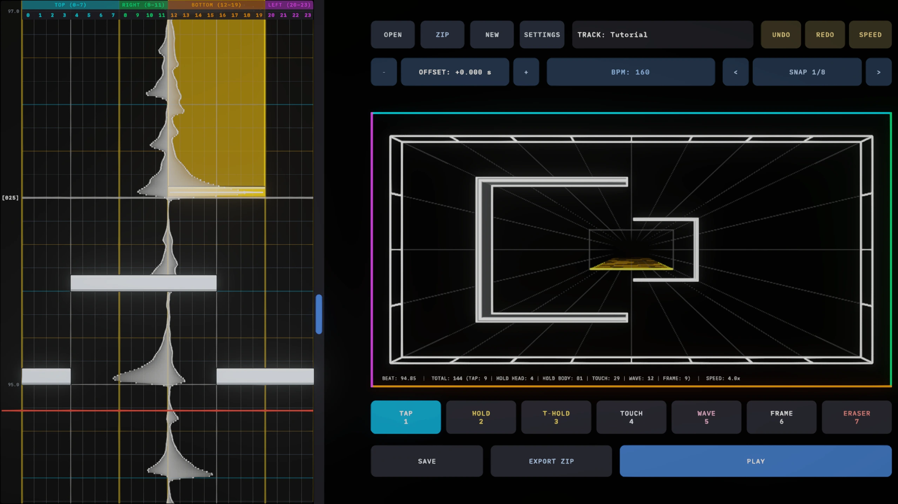
TOOLCHAIN // 01
自研獨立製譜器
建構以結構化 JSON 為基礎的譜面架構，整合音訊波形對拍、BPM 與變速設定、3D 即時預覽及 ZIP 專案封裝功能，提升譜面製作與校正效率。
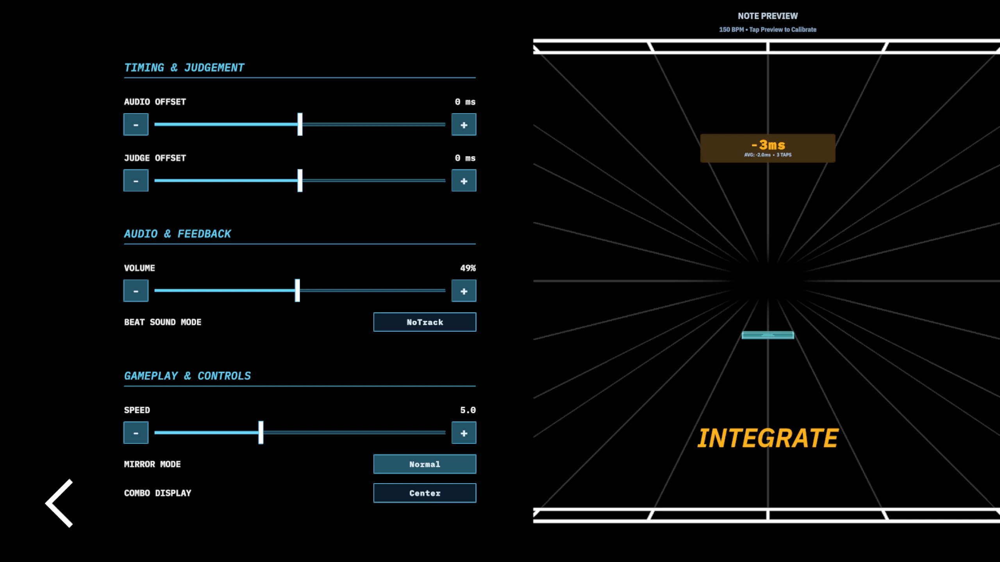
TOOLCHAIN // 02
3D 即時視差流速預覽
專為遊戲設定選單打造之 3D 渲染視窗，提供流速倍率、音訊與判定偏移調整，並支援直接點擊預覽畫面測試毫秒偏差。
06 // COLLABORATION & INQUIRY
合作與交流
歡迎以下項目洽談：
COLLABORATION // 01
展出邀約與技術交流
獨立遊戲展、音遊展實機出展邀約與技術交流洽談。
COLLABORATION // 02
音樂授權與原創收錄
歡迎原創音樂創作者授權樂曲收錄或共同策劃專屬聯名曲包。
COLLABORATION // 03
公司徵才
如果對製作者本人有興趣，歡迎來信洽談工作相關事宜。本頁面為製作者的個人網站頁面之一，歡迎瀏覽本網站其他頁面參考作品與履歷。
07 // ABOUT THE TEAM
開發者介紹
來自台灣的一人團隊，製作者 Mist_Wu 為實踐大學媒體傳達設計系畢，擁有六年以上音樂遊戲遊玩與研究資歷，遊玩過二十餘種不同形式的音樂遊戲，包辦移動端、電腦端、VR 和街機端。曾經夢想成為音遊開發者，而如今則是現在進行式。